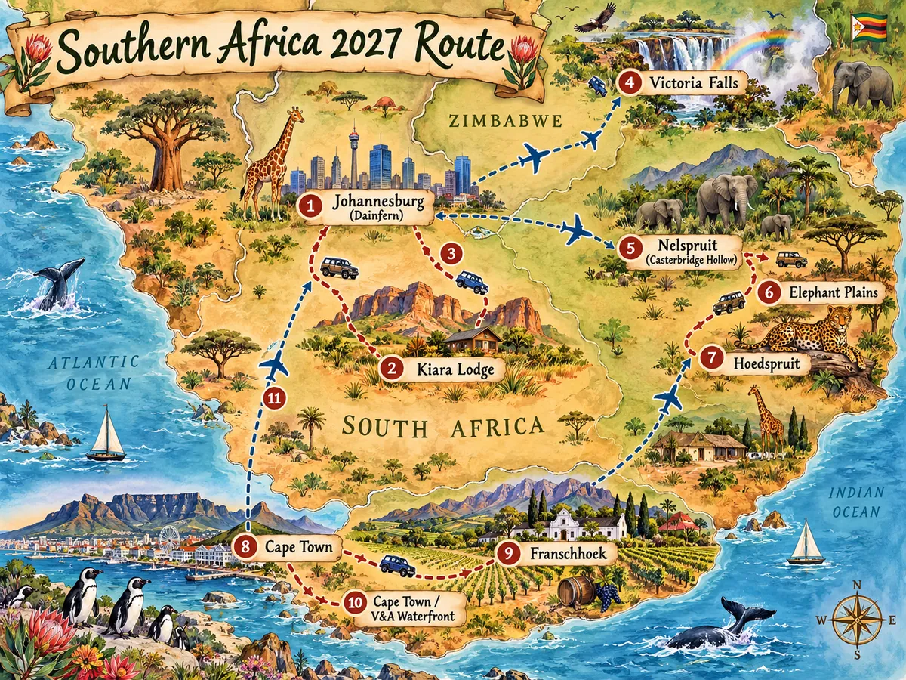

👥
Who is travelling?
8–18 Jan: Jan + partner. From Victoria Falls: the group becomes 10. The Qantas, Nelspruit Lodge and FlySafair confirmations shown here cover Jan + partner.
Brisbane → Johannesburg → Golden Gate → Victoria Falls → Sabi Sand → Franschhoek → Cape Town → Johannesburg.
24 Jan: Cape Town Airport → Franschhoek. 26 Jan: Franschhoek → Mountain Marina at the V&A Waterfront.
8–18 Jan: Jan + partner. From Victoria Falls: the group becomes 10. The Qantas, Nelspruit Lodge and FlySafair confirmations shown here cover Jan + partner.
Keep the logistics firm and the rest flexible. Tap through Stays, Explore and Eat, tick off the Try List as you go, and use FX for quick price checks.
No rigid day plan. Each period shows the confirmed travel facts, where you’re staying, and a checklist of suggested activities to choose from.
Suggestions favour outdoor activity, wildlife, viewpoints and experiences with a strong sense of place. Cape Town now includes a choose-your-own-adventure board with realistic door-to-door timing.
Biased toward meals that feel South African or Zimbabwean — braai, Cape Malay, gatsbys, koesisters, local stews and township food — rather than generic “top-rated” dining.
A trip-long hit list of South African snacks, street food, comfort dishes, sweets and drinks. Tick things off whenever the group finds them.
Rooibos belongs on the list too. For the boozy options, split tastings, eat first and use a designated driver or arranged transport. A Jägerbomb is included because it was requested as a fun night-out option, but it is international rather than uniquely South African.
Core foods and drinks were checked against South African Tourism. The emphasis is on variety and recognisable local favourites, not a claim that every item began in South Africa.
South African Tourism · iconic foods ↗ South African Tourism · food & drink ↗A practical decoder for American travellers: friendly phrases to try, timing traps to understand, and words you may hear on the road.
South African English reflects a multilingual country, and usage varies by region, age and community. Recognition matters more than forcing an accent; the friendliest terms below are marked “Easy to try.”
Meanings and usage were checked against South African lexicography and current guidance for international visitors.
Dictionary of South African English ↗ Stellenbosch University visitor guide ↗ Oxford · sharp-sharp ↗A playful overview of the trip route: drive to Kiara Lodge, drive back to Johannesburg, fly to Victoria Falls, fly to Nelspruit, drive to Elephant Plains, drive to Hoedspruit, fly to Cape Town, drive to Franschhoek, drive back to Cape Town, then fly to Lanseria.

Quickly translate prices while you travel. It starts with South African rand to US dollars, with Australian dollars, euros and British pounds available too.
Reference rates update on working days. Your card, ATM or cash exchange rate can include a spread, foreign transaction fee or withdrawal fee, so the amount charged will differ.
Latest available reference rates are loaded from Frankfurter, which aggregates central-bank and official-source data. The most recent successful rate is saved on this device for offline use.
Frankfurter exchange-rate API ↗This page is trip-specific general guidance, not medical advice. Medication and vaccination choices depend on the individual, so confirm them with a GP or travel-medicine clinician.
Checked 26 Sep 2026 against Australian Smartraveller and CDC destination guidance. Advice can change before January 2027, so recheck shortly before departure.